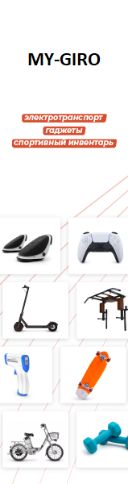

Магазин MyGiro.ru - это прежде всего широкий ассортимент электространспорта, самокатов, гироскутеров, электробайков и минисигвеев, но также Вы всегда можете найти в нашем магазине технику будущего и различные Hi-tech Гаджеты. Мы знаем об электротранспорте всё и даже больше. Мы занимаемся продажей электротранспорта с 2014 года, на нашем счету свыше 5 крупных городов, таких как Москва, Екатеринбург, Челябинск, Пермь, Ярославль, Тюмень и это не предел. За долгие годы работы, мы выстраивали партнерские отношения с лучшими брендами и собрали для Вас ассортимент из товаров которыми пользуемся с удольствием сами и поэтому без сомнений готовы предложить лучшее для Вас в мире электротранспорта.
Для Вашего удобства во всех городах нашего присутсвия располагаются наши Магазины с возможностью Тест-драйва. Мы понимаем, что электротранспорт является очень индивидуальным средством передвижения, поэтому мы с радостью покажем, расскажем и дадим протеститровать наш продукт каждому клиенту . Мы подбираем каждую единицу товара для Вас, будто покупаем себе!) Ваш комфорт для нас превыше всего
Наш магазин предоставляет гарантию на продукцию до 3-х лет, 14 дней на обмен и возврат товара в заводском виде. Специально для каждого клиента при покупке товара в нашем магазине вы получаете гарантированные подарки. Так же мы поощеряем акцию НАШЕЛ ДЕШЕВЛЕ? Сделаем скидку! Мы хотим предложить условия для наших клиентов только лучшие.
Адреса магазинов:
г. Москва, ул. Смольная д.63Б , вход №1, павильон Б-1, 1 этаж ТЦ "ЭКСТРИМ", ст. М. БЕЛОМОРСКАЯ, есть Бесплатная парковка для наших клиентов.
г. Екатеринбург, ул. Куйбышева 61, Цокольный этаж, ТЦ "Наутилус",
ст. М. ГЕОЛОГИЧЕСКАЯ, есть Бесплатная парковка для наших клиентов
Если у вас есть предложения или вопросы, вы всегда можете написать напрямую на почту создателю MyGiro – mygiro@mail.ru
О НАС
MyGiro.ru – магазины техники
будущего в Москве и Екатеринбурге

2014-2022 © MYGIRO.RU | ЭЛЕКТРОТРАНСПОРТ,СПОРТ ТОВАРЫ,
3D ПРИНТЕРЫ, ТЕХНИКА XIAOMI
Материалы, размещенные на сайте, носят информационный характер
и не являются публичной офертой.
3D ПРИНТЕРЫ, ТЕХНИКА XIAOMI
Материалы, размещенные на сайте, носят информационный характер
и не являются публичной офертой.